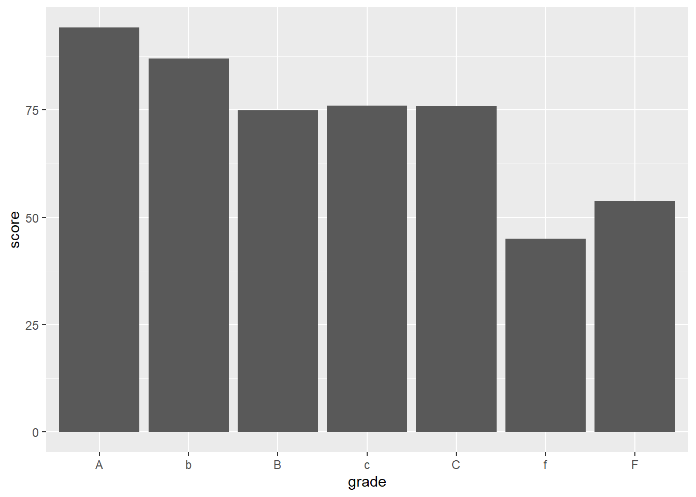
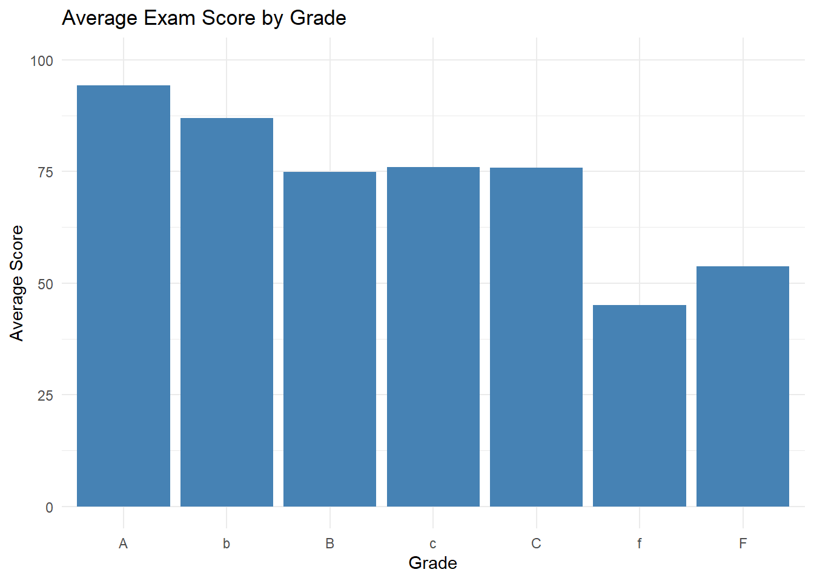
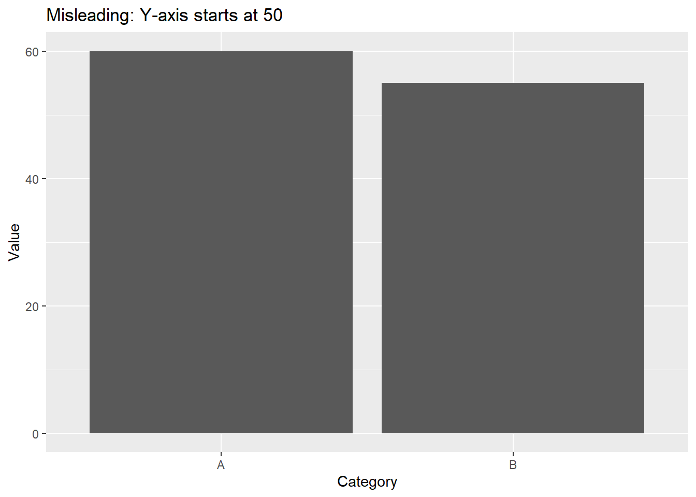

In this section, we’ll explore the critical distinction between data exploration and data presentation. Both are essential components of the data analysis process, but they have different goals, methods, and considerations. Knowing the difference between them will help you tailor your analysis and communication to the appropriate context and audience.
6.2 Learning Objectives
Understand the purpose and characteristics of data exploration.
Understand the purpose and characteristics of data presentation.
Identify the key differences between data exploration and presentation.
Choose appropriate visualization methods for exploration vs. presentation.
Create compelling visuals for data presentation.
Understand data visualization bias.
6.3 What is Data Exploration?
Data exploration is an iterative process of discovering patterns, relationships, and anomalies in a dataset. It’s a detective-like activity, guided by curiosity and a desire to understand the underlying data.
6.3.1 Characteristics of Data Exploration:
Goal: Discover patterns, generate hypotheses, and understand data characteristics.
Audience: Primarily for the analyst/data scientist themselves (or a small team).
Emphasis: Flexibility, experimentation, and uncovering insights.
Level of Polish: Often informal, with less emphasis on aesthetics or perfection.
6.4 What is Data Presentation?
Data presentation focuses on communicating findings and insights to a specific audience. It’s about telling a compelling story with the data in a clear, concise, and visually appealing manner.
6.4.1 Characteristics of Data Presentation:
Goal: Communicate specific findings, insights, and conclusions to an audience.
Audience: Stakeholders, decision-makers, clients, or the general public.
Emphasis: Clarity, accuracy, visual appeal, and persuasiveness.
Level of Polish: High, with attention to detail in design, labeling, and formatting.
6.5 Key Differences Between Data Exploration and Presentation
Feature
Data Exploration
Data Presentation
Goal
Discovery, understanding
Communication, persuasion
Audience
Analyst, small team
Stakeholders, decision-makers, wider audience
Focus
Flexibility, experimentation
Clarity, accuracy, visual appeal
Visualizations
Quick, diverse, exploratory
Polished, focused, impactful
Narrative
Minimal, internal notes
Clear, compelling, tailored to audience
Level of Detail
High (all aspects of the data)
Selective (highlights key insights)
“Aha!” moments
New insights
Confirmation of insights
Polished Level
Quick, functional
Professional, polished
6.6 Choosing Appropriate Visualization Methods
The choice of visualization method depends on whether you are in the exploration or presentation phase.
6.6.1 Exploration Visualizations:
Histograms: Quickly understand the distribution of a single variable.
Scatter Plots: Explore relationships between two numerical variables.
Box Plots: Compare the distribution of a variable across different groups.
Correlation Matrices: Identify correlations between multiple numerical variables.
Density Plots: See the shape of a distribution.
Parallel Coordinate Plots: To visualize several different dimensions.
3-D visualizations: Useful for getting a bird’s-eye view of your data.
6.6.2 Presentation Visualizations:
Bar Charts: Compare the magnitudes of different categories (ensure proper baseline and clear labels).
Line Charts: Show trends over time or across ordered categories (ensure clear labels and scales).
Pie Charts: (Use sparingly) Show proportions or percentages of different categories (limit the number of slices and ensure clear labels).
Maps: Display geographical data and patterns (use appropriate projections and color schemes).
Scatter Plots (Annotated): Highlight specific points or trends in a relationship between two variables.
6.6.3 Common rules of thumb for presenting datasets for people
Always Label clearly
Make sure axes are consistent
Do not cut off axes
Do not hide information
6.7 Creating Compelling Visuals for Data Presentation
For data presentation, it’s crucial to create visuals that are clear, accurate, and engaging. Here are some tips:
Choose the Right Chart Type: Select the chart type that best conveys your message and suits your data.
Simplify the Visual: Remove unnecessary clutter, such as gridlines, extra labels, or overly complex designs.
Use Color Effectively: Use color to highlight important elements or create visual contrast. Be mindful of colorblindness.
Tell a Story: Use the visualization to tell a clear and compelling story. Add a title, caption, and annotations to guide the viewer.
6.7.0.1 Example: Improved Bar Chart for Presentation
Let’s say you want to present the average exam score for each grade. Here’s how you might create a more polished version for presentation:
Initial Exploration Chart:
library(ggplot2)
Warning: package 'ggplot2' was built under R version 4.2.3
#Basic graph, for exploration exam_scores <-read.csv("https://raw.githubusercontent.com/sijuswamyresearch/R-for-Data-Analytics/refs/heads/main/data/exam_scores.csv")ggplot(exam_scores, aes(x = grade, y = score)) +geom_bar(stat ="summary", fun ="mean")

library(tidyverse)
Warning: package 'tidyverse' was built under R version 4.2.3
Warning: package 'tibble' was built under R version 4.2.3
Warning: package 'tidyr' was built under R version 4.2.3
Warning: package 'readr' was built under R version 4.2.3
Warning: package 'purrr' was built under R version 4.2.3
Warning: package 'dplyr' was built under R version 4.2.3
Warning: package 'stringr' was built under R version 4.2.3
Warning: package 'forcats' was built under R version 4.2.3
Warning: package 'lubridate' was built under R version 4.2.3
── Attaching core tidyverse packages ──────────────────────── tidyverse 2.0.0 ──
✔ dplyr 1.1.2 ✔ readr 2.1.4
✔ forcats 1.0.0 ✔ stringr 1.5.0
✔ lubridate 1.9.2 ✔ tibble 3.2.1
✔ purrr 1.0.2 ✔ tidyr 1.3.0
── Conflicts ────────────────────────────────────────── tidyverse_conflicts() ──
✖ dplyr::filter() masks stats::filter()
✖ dplyr::lag() masks stats::lag()
ℹ Use the conflicted package (<http://conflicted.r-lib.org/>) to force all conflicts to become errors
#Assuming the grade is the main column with the average score.ggplot(exam_scores, aes(x = grade, y = score)) +geom_bar(stat ="summary", fun ="mean", fill ="steelblue") +labs(title ="Average Exam Score by Grade",x ="Grade",y ="Average Score") +theme_minimal() +ylim(0, 100) # Force score values between 0 and 100.

6.8 Dangers of Data Visualization
Data visualization can be very powerful for communicating the information with your stakeholders. But it can also give the audience an incorrect understanding of your data
6.8.1 common pitfalls
Incorrect data scale
Hidden and misrepresented data
Skewed charts
Data Scale
When communicating results make sure that the Y scale correctly represents the values for an accurate picture. Here is an example of an incorrect visualization of the data.
library(tidyverse)set.seed(123)data <-data.frame(Category =c("A", "B"),Value =c(60, 55))ggplot(data, aes(x = Category, y = Value)) +geom_bar(stat ="identity") +ylim(0, 60) +labs(title ="Misleading: Y-axis starts at 50",x ="Category", y ="Value")

Hidden or misinterpreted data
One common visualziation mistake is to have incorrect scales and to remove data. If you had one set of data, and only communicated a small part of the data set the audience can get a very wrong idea about the quality and the overall trend.
This also applies to things such as selecting the data to use, or cleaning data that may be relevant.
Skewing Charts
Make sure you’re choosing the best methods to display the data. Charts like a pie chart can often be more confusing than helpful.
6.9 Conclusion
Data exploration and data presentation are two distinct but complementary phases of the data analysis process. Data exploration is about discovering patterns and generating hypotheses. Data presentation is about communicating findings and insights to a specific audience. By understanding the key differences between these phases, you can tailor your analysis and communication to the appropriate context and audience. Choose the right visualization and format for the given situation.
Practice
Take a dataset you’ve used previously.
Create exploratory visualizations to understand the data.
Select a key insight you want to communicate.
Design a polished visualization to present that insight to a specific audience (e.g., a non-technical stakeholder).